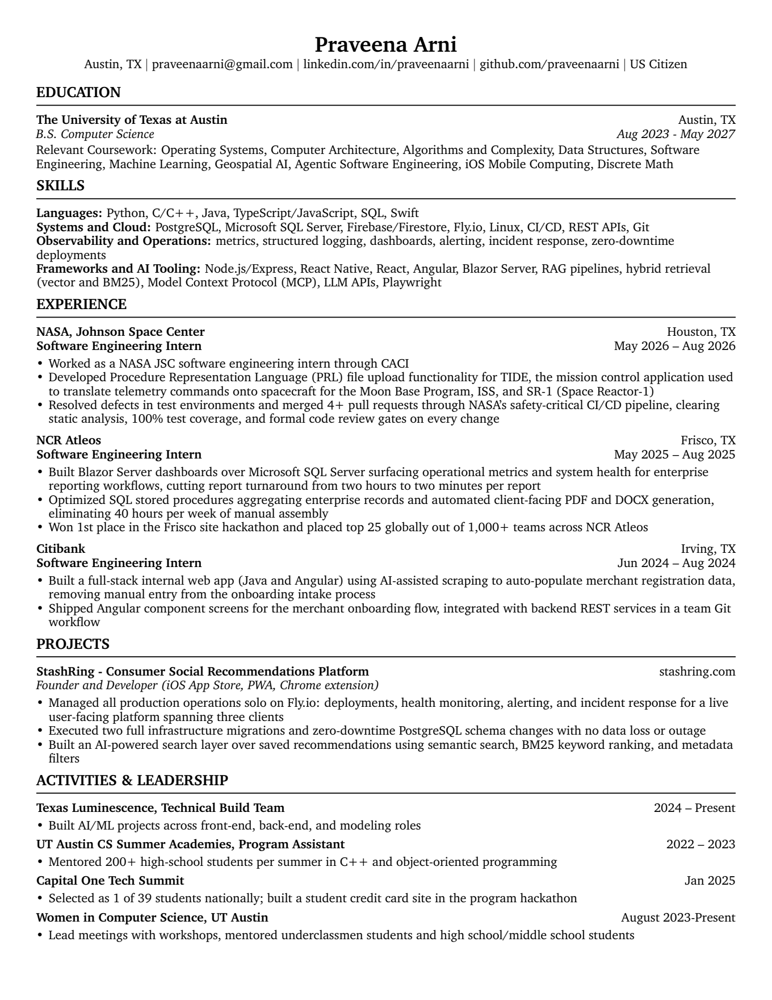

Software engineering intern candidate
Computer science student at UT Austin, most recently a software engineering intern at NASA Johnson Space Center. Below are my experience and skills, a featured project, and my resume: a hangman engine I built in Java, with its design decisions, costs, and defects worked out.
praveenaarni@gmail.com
github github.com/praveenaarni
linkedin linkedin.com/in/praveenaarni
Austin, TX · US Citizen
Experience
May – Aug 2026
NASA Johnson Space Center, through CACI
Software Engineering Intern · Houston, TX
Built Procedure Representation Language file upload for TIDE, the mission control application that translates telemetry commands to spacecraft for the Moon Base Program, ISS, and Space Reactor-1. Merged four or more pull requests through a safety-critical CI/CD pipeline with static analysis, 100% test coverage, and formal code review on every change.
May – Aug 2025
NCR Atleos
Software Engineering Intern · Frisco, TX
Built Blazor Server dashboards over Microsoft SQL Server for operational metrics and system health, cutting report turnaround from two hours to two minutes. Optimized stored procedures and automated PDF and DOCX generation, removing 40 hours a week of manual assembly. First place in the Frisco site hackathon, top 25 globally of 1,000+ teams.
Jun – Aug 2024
Citibank
Software Engineering Intern · Irving, TX
Built a full-stack internal web app in Java and Angular that auto-populates merchant registration data, removing manual entry from onboarding. Shipped Angular screens integrated with backend REST services in a team Git workflow.
Skills and background
| Area | Detail |
|---|---|
| Languages | Python, C/C++, Java, TypeScript/JavaScript, SQL, Swift |
| Systems and cloud | PostgreSQL, Microsoft SQL Server, Firebase/Firestore, Fly.io, Linux, CI/CD, REST APIs, Git |
| Operations | Metrics, structured logging, dashboards, alerting, incident response, zero-downtime deployments |
| Frameworks and AI tooling | Node.js/Express, React Native, React, Angular, Blazor Server, RAG pipelines, hybrid retrieval (vector and BM25), Model Context Protocol, LLM APIs, Playwright |
| Coursework | Operating Systems, Computer Architecture, Algorithms and Complexity, Data Structures, Software Engineering, Machine Learning, Geospatial AI, Agentic Software Engineering, iOS Mobile Computing, Discrete Math |
| Education | B.S. Computer Science, The University of Texas at Austin, Aug 2023 – May 2027 |
Texas Luminescence technical build team, 2024 to present. Women in Computer Science at UT Austin, leading workshop meetings and mentoring underclassmen and high-school students, 2023 to present.
UT Austin CS Summer Academies program assistant, 2022 to 2023, mentoring 200+ high-school students per summer in C++. Capital One Tech Summit, January 2025, one of 39 students selected nationally.
Featured project
What it is. A hangman opponent that never commits to a word. It keeps every dictionary word of the chosen length, and on each guess it groups the candidates by the board they would produce, then keeps the largest group. The player loses a life only relative to the family the engine just chose. The engine is one 370-line class, HangmanManager, that owns the dictionary, the live candidate set, the board pattern, and the guess budget.
My role. I built the engine against a fixed public contract and set of family-selection rules. Every data structure, loop, helper, and tie-break implementation is mine. A console driver and a replay-based test harness exercise it.
| Pattern after guessing E | Words | Size |
|---|---|---|
| - - - - | ALLY, COOL | 2 |
| - E - - | BETA | 1 |
| - - E - | DEAL | 1 |
| E - - E | ELSE | 1 |
The engine keeps the family of two, reports “no E,” and the player loses a guess. Three candidates are gone and the player learned nothing. The pattern string is both what the player sees and the key that names the family, so the whole algorithm is one hash map.
| Choice | Alternative | Why | Cost |
|---|---|---|---|
| HashSet for candidates | ArrayList | Deduplicates the dictionary and keeps the caller’s collection isolated | No index access; iteration order is unspecified |
| HashMap for families | TreeMap | O(1) bucket per word in the one loop that touches every candidate | A second, sorted map is built for the caller |
| TreeMap returned | HashMap | Deterministic order makes expected outputs stable for testing | O(F log F · L) inserts; F is small |
| Full sort of families | One pass for top two | Nine lines, obviously correct, reuses the comparator | O(F log F) where O(F) would do |
| Rebuild set each guess | Remove losers in place | The winning family is already a list; one copy is simpler than N removals | One allocation per guess; size only shrinks |
With N live candidates, word length L, and F distinct families this guess, partitioning is O(N · L): one L-character pattern per word, hashed in O(L). Sorting families is O(F log F · L), and F is bounded by min(N, 2^L), a handful in practice. N only shrinks, so the first guess is the worst and a round is O(26 · N₀ · L). On a dictionary of 45,347 words the largest N₀ is 7,358 eight-letter words, which puts the worst first guess near 59,000 character operations. That is why I chose readable structures over caching at this scale, and I can say where the decision flips.
public int compareTo(CompareClass o) { if (length != o.length) return o.length - length; // larger family first int a = numCharsRevealed(pattern), b = numCharsRevealed(o.pattern); if (a != b) return a - b; // fewer revealed letters first return pattern.compareTo(o.pattern); // then alphabetical, for determinism }
Equal-size families leave the player the same number of words to rule out, but the one with fewer revealed letters hides more about positions, so it sorts first. Subtraction for ordering can overflow in general. Family sizes here are bounded by the dictionary, so it cannot.
The lesson I took: the happy path never exercises a precondition, so precondition checks need tests of their own.
Unit tests on a five-word dictionary with every family computed by hand. An automated player with two letter-selection strategies, compared by win rate over the full dictionary. Then measure, replace string concatenation with a char array, and measure again.
The full source is not posted publicly. I walk through it live in interviews and can share it on request.
Resume
